From source documents to professional presentations — A detailed guide on using prompts to control structure, tone, and visual design
Google NotebookLM is an AI-powered research platform that lets you upload multiple source documents (PDFs, Google Docs, web URLs, YouTube videos, etc.) and interact with them through intelligent chat. The Slide Deck feature (launched late 2025) auto-generates presentations from your uploaded sources using the Nano Banana Pro image model.
| Criteria | NotebookLM Slide Deck | Gemini in Google Slides | Canva AI / Gamma |
|---|---|---|---|
| Data Sources | Multi-source (PDF, Docs, Web, YouTube) | Text prompt or single file | Text prompt |
| Factual Grounding | High — grounded in uploaded sources | Medium — may hallucinate | Low — prompt-dependent |
| Custom Prompt | Yes — outline, tone, visual | Yes — limited | Yes |
| Per-slide Revision | Yes | Yes (side panel) | Yes |
| Export Formats | PDF, PPTX | Native Google Slides | PDF, PPTX, link |
| Slide Rendering | Image-based (rendered) | Native editable | Editable |
For this demonstration, we use the scenario of an EdTech company “EduNova” preparing a slide deck titled “2025 Annual Report & AI Product Vision 2026” for their Board of Directors. Here are the 7 selected sources:
| # | Source Document | Type | Why We Chose It |
|---|---|---|---|
| 1 | EduNova 2025 Annual Report | Contains financial data (revenue, growth, user count), KPIs, and business strategy — primary data source for Executive Summary and Revenue slides | |
| 2 | AI Product Strategy Doc 2026 | Google Docs | Product roadmap, AI feature specs (AI Tutor, Content Gen, Analytics), deployment timeline — core content for Strategic Pillars and Roadmap sections |
| 3 | Blog post on AI in education (Google Blog: Gemini for Educators) | Web URL | Latest information from Google on AI tools for education (Gemini, NotebookLM, Workspace Studio) — ensures factual grounding on technology trends and industry context |
| 4 | TED Talk: “How AI Could Save Education” — Sal Khan | YouTube | Vision for AI in education from the Khan Academy CEO — helps NotebookLM capture an inspiring tone and narrative about personalized AI tutoring (aligns with EduNova’s Pillar 1) |
| 5 | EduNova Brand Guidelines | Color codes (#0d47a1, #ff6d00), typography (Inter/Roboto), logo rules — NotebookLM references this to maintain brand consistency | |
| 6 | Vietnam EdTech Market Report 2025 | Market context, trends, competitive landscape — adds analytical depth to the Market Landscape section | |
| 7 | Current EduNova Investor Deck (Q4 2025) | Google Slides | Reference for existing presentation style (layout, data visualization) — maintains consistency with previous materials |
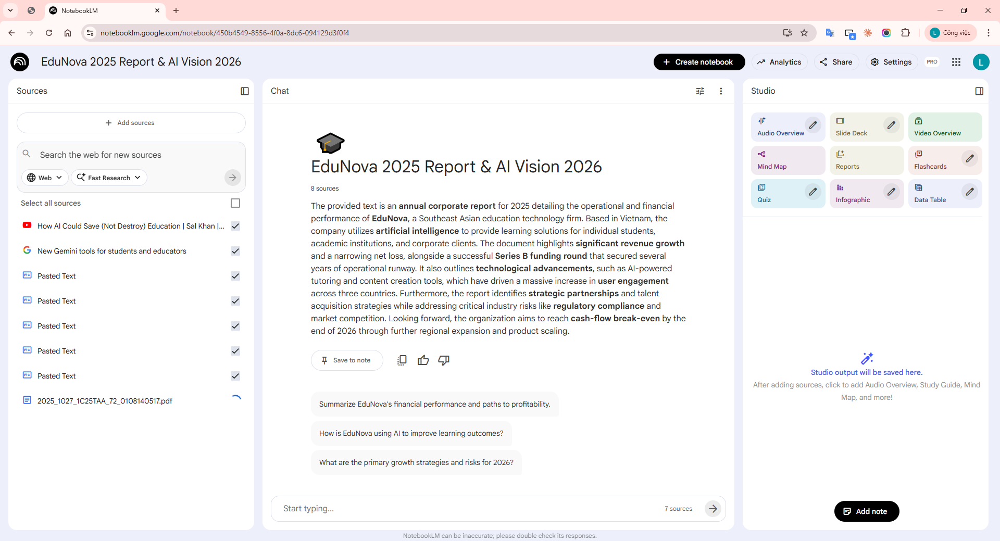
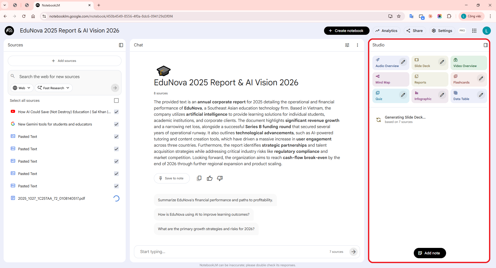
NotebookLM allows you to enter a Custom Prompt in the customization panel before generating. This prompt is the “control brain” that determines output quality. We need to control three aspects:
Goal: Define the exact structure of the presentation — sections, slide count, and main content per slide.
All three aspects are merged into a single prompt for the Custom Prompt field:
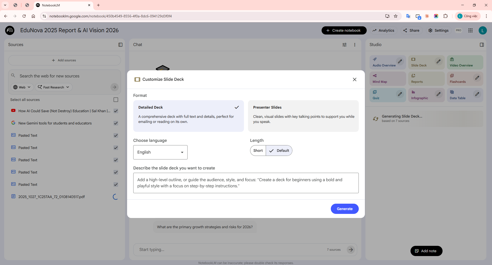
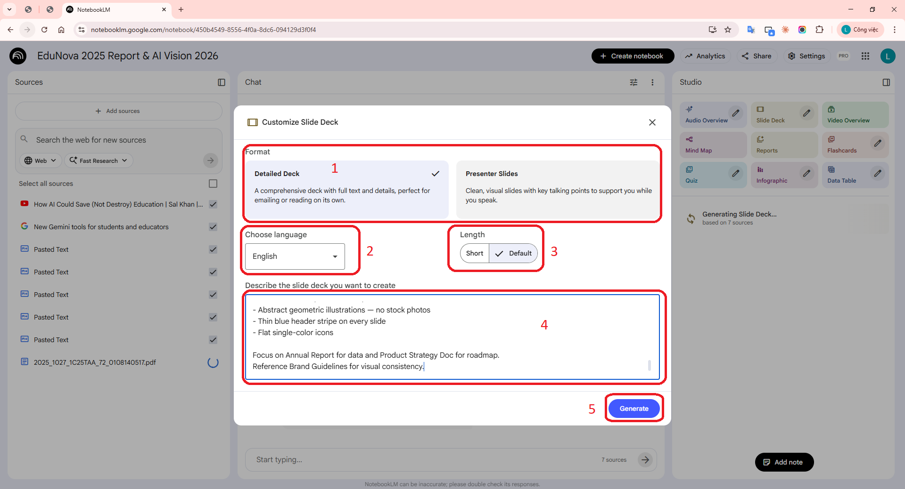
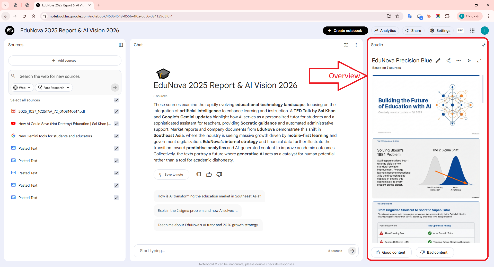
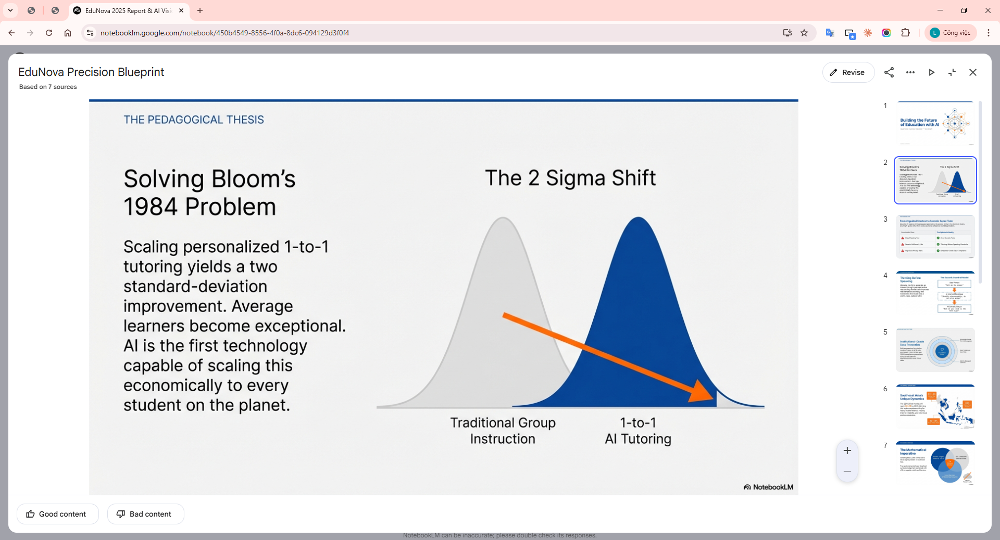
After generation, we need to evaluate the results. However, there is an important limitation: NotebookLM cannot directly view the generated slide deck. When asked to evaluate, it analyzes the source text against the Brand Guidelines rather than the visual output.
NotebookLM responds: “I do not have access to the specific slide deck you just generated. However, if you are referring to the source text, here is a review against the Brand Guidelines...”
→ NotebookLM can only evaluate source text vs Brand Guidelines — it cannot see the rendered slides. Therefore, we combine: (1) visual evaluation by eye + (2) content evaluation via NotebookLM chat.
When asking NotebookLM: “Review the slide deck content against the Brand Guidelines. What are the strengths and weaknesses?”, it returns:
In addition to NotebookLM chat feedback, we visually inspect the generated slides and note:
| Issue Found (visual) | Affected Criteria | Root Cause in V1 Prompt | Recommended Fix |
|---|---|---|---|
| Multiple slides use raw tables instead of stat cards / charts | Design | Prompt says “bar charts” generically without specifying which slide gets which chart | Specify per slide: “Slide 3: 4 stat cards in 2x2 grid”, “Slide 4: grouped bar chart” |
| Exceeding 5 bullets/slide on multiple slides (7–8 bullets) | Clarity, Design | V1 says “max 6 bullets” but Brand Guidelines require max 5 + max 12 words/bullet | Tighten to: “max 5 bullets, max 10 words each” + split heavy slides into two |
| Inconsistent colors — some slides use gradients or off-palette colors | Design | Prompt merely “suggests” palette, not strict enough | Add “STRICTLY use ONLY these colors” + “NO gradients, NO additional colors” |
| Header stripe missing on 3–4 slides | Design | “Every slide” instruction not strong enough | Emphasize “ALL 14 slides MUST have identical blue header stripe at top” |
| Roadmap slide displayed as bulleted list instead of timeline | Structure, Design | No visual format specified for roadmap | Add “HORIZONTAL TIMELINE with Q1→Q4 markers and milestone icons below” |
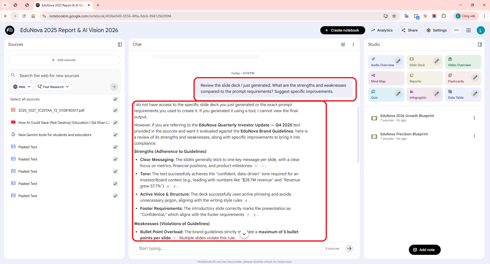
After V1 generation, you can fine-tune individual slides. If skipped: no need to capture step-08; proceed directly to export.
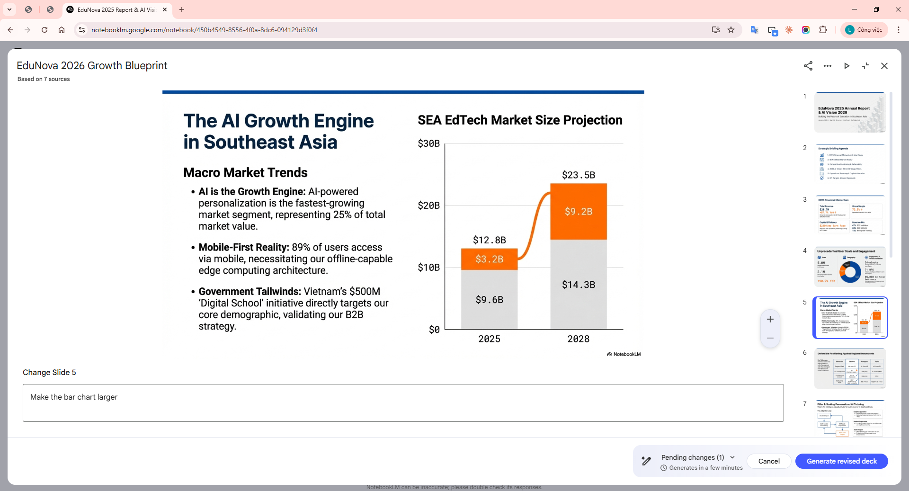
In the Slide Deck viewer, click the three-dot menu (⋯) next to the slide deck name.
Select “Download PDF Document (.pdf)”. You can also choose “Download PowerPoint (.pptx)” for further editing.
The file downloads to your machine. Each slide becomes one PDF page (high-quality image, 16:9 aspect ratio).
Open the PDF in a viewer (Chrome, Edge, Adobe Reader) to verify final quality.
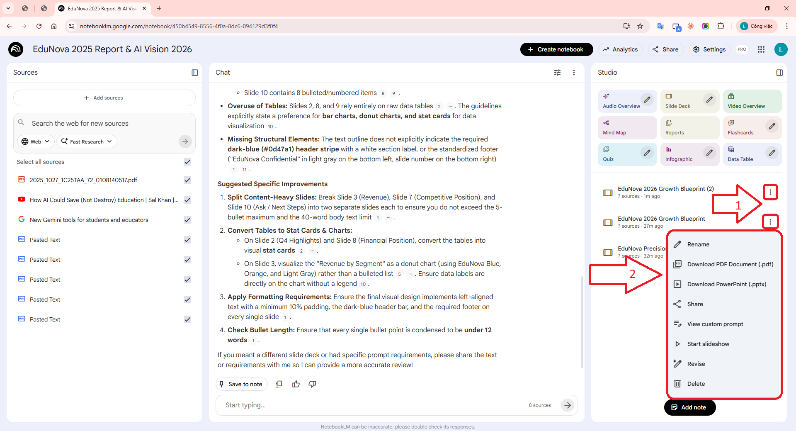
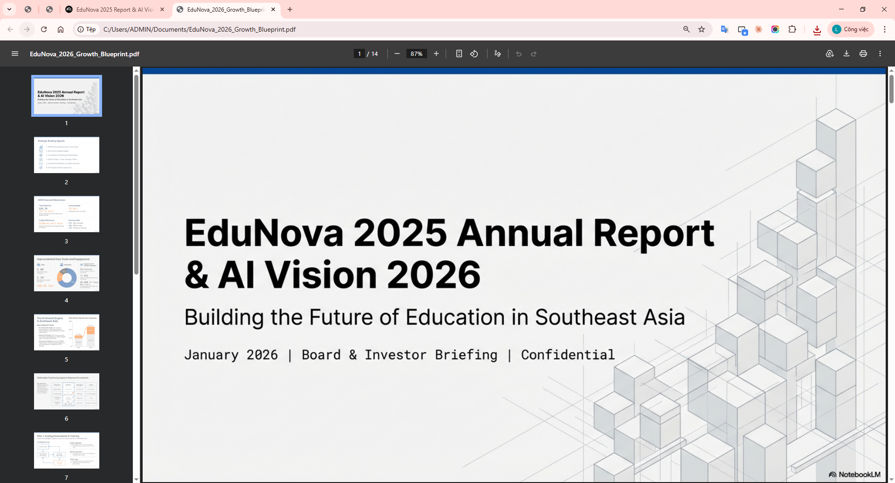
Demo notebook: NotebookLM •
PDF: EduNova_2026_Growth_Blueprint.pdf
Evaluate generated slides on four criteria (1–5 each, max 20):
Typical V1 score: 11/20 — Average. Design consistency and text density often need improvement.
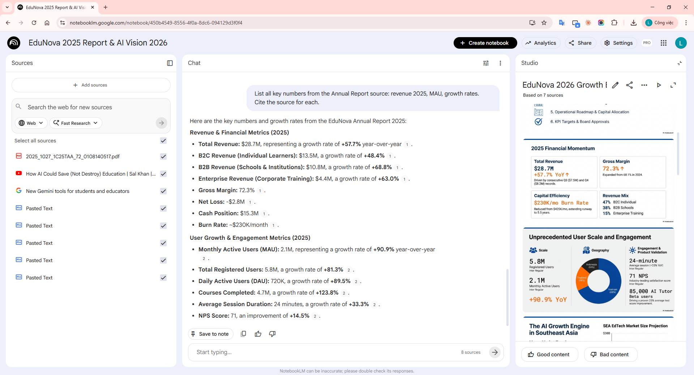
| Good Fit | Not the Best Fit |
|---|---|
| Quickly drafting presentations from multiple source documents | Pixel-perfect slides (use Figma/Canva instead) |
| Condensing lengthy research/reports into a presentation | Complex animations or embedded video |
| Brainstorming visual stories from raw data | Strict corporate templates (use Google Slides + template) |
| High factual grounding needed (data pulled from sources, not fabricated) | Real-time collaborative editing with multiple people |
| Quick sharing via PDF or link | Specialized fonts or specific language rendering requirements |